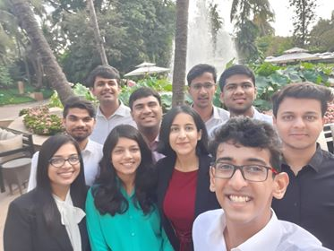

Want a sneak peek of the Investment Banking Sector?
Get all your queries cleared, right here.
Interviewee : Indresh 6 min read

Q. Who are you?
Ans: My name is Indresh, a Fifth Year from the Department of Biotechnology and I just completed an
internship at Deutsche Bank arranged by the CDC Internship Placement Drive.
Q. What is the Selection Procedure?
Ans: The DB selection procedure is fairly straightforward.It consists of 4 - 5 rounds of panel interviews
following a CV shortlist procedure, apart from a simple test process. The test itself is pretty simple
with Quantitative Reasoning and English sections. Once the CV is shortlisted, the interviews take
place along with the other companies and take upto 3 hours to get through.
Q. How to prepare for them?
Ans: Firstly, ONE DOES NOT NEED A FINANCE BACKGROUND TO SECURE AN INTERNSHIP AT
DB. This is the most important point to be kept in mind. They just see how well you have done
whatever you put on your CV and how they feel you would fit into their work environment. While this
sort of a decision is subjective at best, it allows you to be yourself through the interview process. At
the same time, some proficiency in Probability, Statistics and basic Quant ability is expected of the
candidate (an entire round is usually dedicated to this aspect).
In short, be confident of what you have done and you should do fairly well in the DB selection
process.
Q. What were the Project Details?
Ans: I worked on FX Hedging Methodologies while at DB. I am, however, unable to disclose more about
the same.
Q. How was the Company culture?
Ans: The Desk that I worked with was Fixed Income and Currencies : APAC Region, which consists of
people from various backgrounds who do a variety of work, which makes it an excellent learning
opportunity for someone who's just delving into the world of finance. They are a really fun, yet at the
same time, an insightful bunch with whom I spent a really great 2 months. There's pretty good work-
life balance which allows you to enjoy not just the internship but the city of Mumbai as well, so that's a
plus.
Q. Who should ideally apply for the internship?
Ans: I feel everyone should apply for this Company because there is no right or wrong "profile", per say.
If you draft your CV well enough, you should get good shortlists, although that is subjective and the
only thing that may stop you short. However, upon making it to the interview rounds, as long as you're
candid with them about your expectations from the internship, there isn't much that should stop you
from making it.
Q. Any advice?
Ans: I don't have any DB-specific advice to be honest. However, to everyone sitting for an internship, be
it their third or fourth year, I strongly recommend you to try out a new field; something you haven't
done in the past. College is the only time you get to explore and I hope you make the best of it.
Best of luck and cheers!